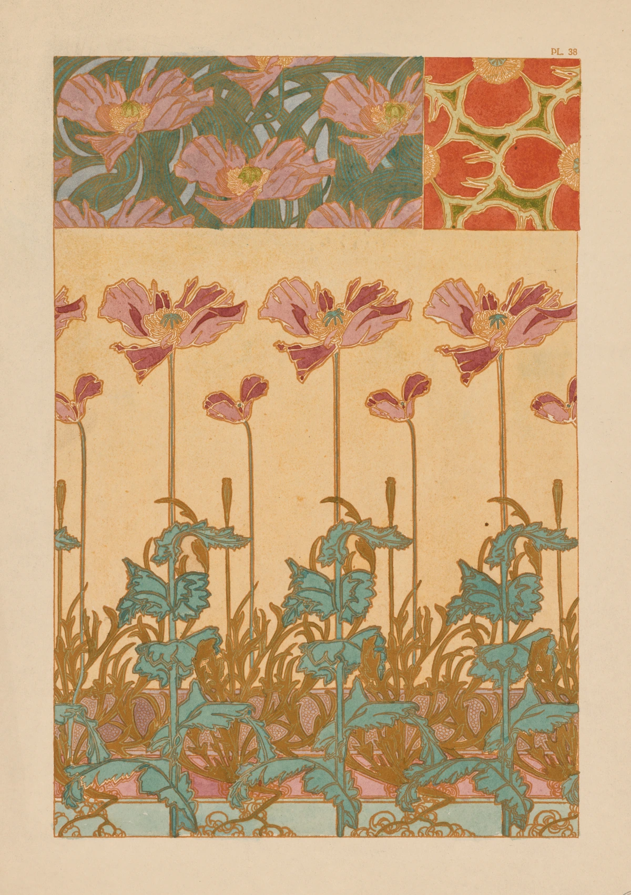
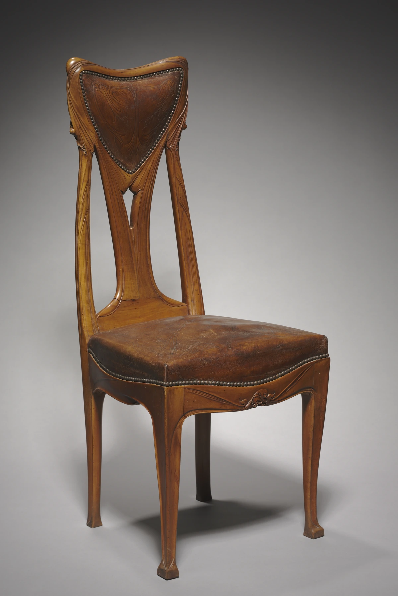
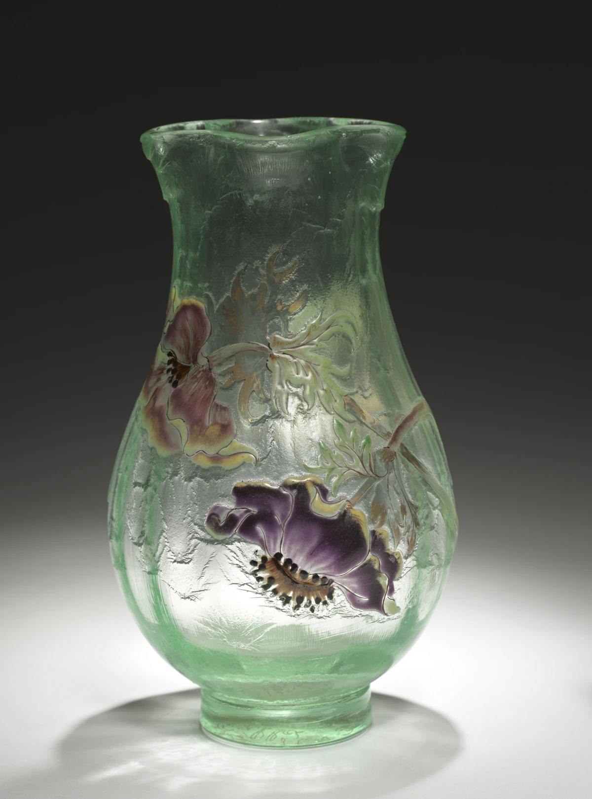

同じ花を、違う秩序に変える。
上部には二つの小さな模様の見本、下部には茎を長く伸ばした花が並びます。同じ植物を、密な面・輪郭の強い単位・縦に伸びる反復へ組み替える様子を一枚の中で比べられます。
本文試作・実作品画像3点収録 / 図案・家具・ガラスの比較セット（解説・出典付き） · 2026-11-01
国際的な様式と改革の潮流
Art Nouveau
花や葉の形は、紙の上だけにあるのではありません。
いすの木や、花びんの表面にも広がっています。
アール・ヌーヴォーでは、こうした線や形を使い、新しい時代の物づくりを探しました。
植物の形から、ずいぶん違う物が生まれますね。
LOOK AT THE WORK / 実作品を見る

画像を表示できませんでした。下の所蔵元リンクから作品を確認できます。
ART NOUVEAU / DECORATIVE PRINT · 1901–1902年
Alphonse Mucha（アルフォンス・ミュシャ） / The Cleveland Museum of Art
広告ポスターではなく、飾りの図案を示す版画1枚です。所蔵館は1901–1902年と記録しています。写真に見えるPL 38は図版の番号で、本全体の画像ではありません。どの版か、いつ刷られたかという詳しい情報は未確認です。
上部には二つの小さな模様の見本、下部には茎を長く伸ばした花が並びます。同じ植物を、密な面・輪郭の強い単位・縦に伸びる反復へ組み替える様子を一枚の中で比べられます。
淡い桃色や赤紫の花、青緑の葉を、黄褐色の細い線が縁取ります。濃淡で立体を描き切るよりも、色の面と曲線が互いにつながる関係に目を向けてみてください。
下部は葉が重なって密ですが、花の周囲には明るい地が大きく残ります。上の帯状の模様との密度差が、長い茎のリズムを際立たせています。右上には「PL 38」の印字が見えます。
形・配色・構成は掲載画像の実見による観察、作者・年代・技法は所蔵記録によります。Clevelandの「Art Nouveau in France」展（1988年）出品歴を確認し、図案・家具・ガラスの比較セットに選びました。
Documents Decoratifs: Oriental Poppies, 1901–2. Alphonse Mucha (Czech, 1860–1939). Lithograph. The Cleveland Museum of Art, Mr. and Mrs. Charles G. Prasse Collection, gift in honor of the fiftieth anniversary of The Print Club of Cleveland, 1969.236. CC0.
所蔵元の個別作品記録 ↗所蔵番号1969.236。原作品：館の個別Open Access対象。配信画像：公式APIの個別CC0指定。確認日 2026-11-01。
公式配信の原JPEGは無加工で保持し、拡大リンクから取得できます。ページ表示には縦横比と全画面を保った縮小WebPを使用（切り抜き・色補正なし）。原JPEGと各表示画像のサイズ・SHA-256を権利台帳に別記録。撮影者名は未確認のため推定しません。
美術館のOpen Access方針 / CC0 1.0 / 収録画像の権利台帳
所蔵館の個別公開指定とCC0方針に基づきます。全法域の権利保証や美術館の推奨を意味しません。
LOOK AT THE WORK / 実作品を見る

画像を表示できませんでした。下の所蔵元リンクから作品を確認できます。
ART NOUVEAU / FURNITURE · 1907年頃
Hector Guimard（エクトール・ギマール） / The Cleveland Museum of Art
Cleveland所蔵の椅子1985.96を斜め前から見た1点です。パリ地下鉄入口とは別作品。1907年頃は館が示す制作年で、特定の建物の室内用と推定していません。
背の中央の支えが上へ分かれ、左右の枠と連続して見えます。座面下の幕板にも緩やかな起伏があり、背・座・脚を別々の四角として区切らない輪郭を作っています。
木部には流れる溝、革の背当てには繊細な線模様が見えます。革の周囲の鋲が点の連なりとなり、大きな曲線を細かな反復で縁取っています。素材は館の記録では梨材と型押し革です。
背の支えの左右に細長い空隙が残り、中央の濃い革と対照を作ります。この斜め前の写真では座面の奥行きと四本の脚が見え、平面の文様だけでなく家具としての構造を追えます。
形・模様・空隙は掲載写真の観察、作者・年・素材は所蔵記録に基づきます。同館の「Art Nouveau in France」展（1988年）出品歴を確認。図案・家具・ガラスの3点で、平面の模様と立体の構造を比較できます。
Hector Guimard, Chair, c. 1907. Pearwood with tooled leather back and seat. The Cleveland Museum of Art, Leonard C. Hanna Jr. Fund, 1985.96. CC0.
所蔵元の個別作品記録 ↗所蔵番号1985.96。原作品：館の個別Open Access対象。写真：公式APIの個別CC0指定。確認日 2026-11-01。
公式配信の原JPEGは無加工で保持し、拡大リンクから取得できます。ページ表示には縦横比と全画面を保った縮小WebPを使用（切り抜き・色補正なし）。原JPEGと各表示画像のサイズ・SHA-256を権利台帳に別記録。撮影者名は未確認のため推定しません。
美術館のOpen Access方針 / CC0 1.0 / 収録画像の権利台帳
所蔵館の個別公開指定とCC0方針に基づきます。全法域の権利保証や美術館の推奨を意味しません。
LOOK AT THE WORK / 実作品を見る

画像を表示できませんでした。下の所蔵元リンクから作品を確認できます。
ART NOUVEAU / ENAMELED GLASS · 1900年頃
Émile Gallé（エミール・ガレ） / The Cleveland Museum of Art
掲載したのはCleveland所蔵1983.225の全体写真1点です。高さ23.4 cm、直径13.5 cmです。館の記録に従い、1900年頃のエナメル彩ガラスとしています。エナメル彩は、表面につけたガラス質の色を焼きつける方法です。裏や底にある刻印、工房で誰がどの工程を担当したかは、この写真から推測しません。
紫や桃色の花と細い茎・葉が、胴の丸みに沿って広がります。右側の茎は側面へ消え、模様が一枚の平面ではなく器の周囲に続くことが分かります。
ふくらんだ胴から首が絞られ、口縁が再び開きます。縁の高さにはうねりがあり、表面に描かれた植物だけでなく器そのものの輪郭にも曲線が現れています。
緑のガラスを通る明るさと、花の彩色が濃く見える部分を比べられます。館の材質・技法表記はエナメル彩ガラスです。この写真の照明や背景による明暗を、使用時に常に見える色とは同一視しません。
形・配色・構成は掲載画像の実見による観察、作者・年代・技法は所蔵記録によります。Clevelandの「Art Nouveau in France」展（1988年）出品歴を確認し、図案・家具・ガラスの比較セットに選びました。
Vase, c. 1900. Emile Gallé (French, 1846–1904). Enameled glass; diameter: 13.5 cm (5 5/16 in.); overall: 23.4 cm (9 3/16 in.). The Cleveland Museum of Art, Gift of Dr. and Mrs. Roland Burelli, 1983.225. CC0.
所蔵元の個別作品記録 ↗所蔵番号1983.225。原作品：館の個別Open Access対象。配信画像：公式APIの個別CC0指定。確認日 2026-11-01。
公式配信の原JPEGは無加工で保持し、拡大リンクから取得できます。ページ表示には縦横比と全画面を保った縮小WebPを使用（切り抜き・色補正なし）。原JPEGと各表示画像のサイズ・SHA-256を権利台帳に別記録。撮影者名は未確認のため推定しません。
美術館のOpen Access方針 / CC0 1.0 / 収録画像の権利台帳
所蔵館の個別公開指定とCC0方針に基づきます。全法域の権利保証や美術館の推奨を意味しません。
作品の知名度や画像の入手しやすさだけで選びません。紹介したい作品と、調べて分かったことをまとめました。画像を載せられるかどうかは、別に確かめています。画像の利用許諾を確認できていないものは掲載していません。
掲載した3点は、Clevelandの「Art Nouveau in France」展に出た記録のある、図案、家具、ガラスです。植物の輪郭が、違う材料の中でどう生かされるかを比べる、最初のセットです。人物や文字の入った広告ポスター、建築、地域ごとの展開をすべてカバーしてはいません。ミュシャ（Mucha）の図案と、《Gismonda》などの広告ポスターは区別します。
作品の内容を説明する見出し
原題：Gismonda（LACMA所蔵個体 M.87.294.41）
舞台に立つサラ・ベルナールを描いたポスターです。
人の姿、文字、まわりの飾りを、細長い紙の中に組み合わせています。
文字と絵を別々にせず、一緒に見てみるための作品です。
演劇ポスター・5色リトグラフ・2枚の紙
財団の作品記録は、縦長の画面と、アーチ状の場所に立つ舞台上のサラ・ベルナール（Sarah Bernhardt）を説明しています。描いた文字、人物、飾りを一つにまとめるポスター表現の例です。
LACMA所蔵のこの作品は213.04 × 74.93 cmです。リトグラフ（石などの平らな版を使う印刷方法）で、5色を使って2枚の紙に刷っています。縦長の印刷物が、どんな材料をどう組み合わせてできているかにも注目します。財団が示す制作年と掲出年、所蔵作品に示された年代の幅は区別します。画像ごとの公開ライセンス表示を確認できていないため、実画像はまだ取得・掲載していません。
作品の内容を説明する見出し
原題：Hôtel Tassel
曲線の飾りと、建物を支える部分を組み合わせた家です。
部屋のつながり方や、光の広がりも大切です。
階段の飾りだけでなく、家の中全体から考えます。
architecture / interior
UNESCOは、開放的な間取り、広がる光、曲線の飾りと建物を支える構造の組み合わせを、アール・ヌーヴォーの代表的な価値として説明しています。階段室の模様だけでなく、空間全体を見ます。
UNESCOの評価資料では、1893年の依頼、1894年の完成、その後の家具制作を分けています。写真を撮った人の権利は、建築作品の権利とは別に確認します。
作品の内容を説明する見出し
原題：Entrance Gate to Paris Subway (Métropolitain) Station（MoMA所蔵個体）
地下鉄の入口に使う、鉄などでできた部品です。
植物を思わせる曲線に、案内の表示や明かりを組み合わせています。
同じ形の部品をつくることで、運んで組み立てやすくしました。
都市交通の入口・規格化された鋳鉄部品
植物のような曲線が、標識や照明とともに地下鉄の入口に組み込まれています。MoMAは、規格をそろえた鋳鉄（ちゅうてつ。溶かした鉄を型に流してつくる材料）の部品によって、製造・運搬・組み立てがしやすくなったと説明しています。手作業の飾りだけでなく、工業的に同じ部品をつくることや、街での使われ方にも注目します。
対象はMoMA 177.1958.a-fで、RATPから寄贈されました。材料は、塗装した鋳鉄、釉薬（ゆうやく。表面をおおうガラス質のうわぐすり）を施した溶岩石、ガラスです。現在の記録は1900年頃ですが、古い教材には1905年との表記もあります。設計年、部品を鋳造した年、交換した部材、移した年、撮影年は分けます。今残る入口が、すべて最初の材料のままとは限りません。
作品の内容を説明する見出し
原題："Tulip" lamp
色ガラスで花の形を表した照明です。
ガラスをつなぐ線も、花の形をつくっています。
下の台にも、金属と緑のガラスを組み合わせています。
ガラス・青銅の照明器具
花の輪郭を、色ガラスとそのつなぎ目で表した照明です。自然を思わせる形が台座まで続きます。Metは色の変化に加え、青銅の網状の部分に、不透明な緑のガラスを吹き込んだ台座を説明しています。模様、材料、光、つくり方のつながりを見ます。
対象はMet 2011.99.3で、直径35.6 cmです。同館が関連資料として挙げる木型1980.497.4と下絵1980.497.14は、つくるための資料であり、この完成品そのものではありません。別作品《Dragonfly》の図案はClara Driscollの作である「可能性がある」とされていますが、その判断をこの作品に当てはめることはできません。
作品の内容を説明する見出し
原題：Chair（Cleveland 1985.96）
木と革を使ったいすです。
曲線は、いすを支える木の部分にも、革の飾りにも使われています。
ポスターの線とは違い、人が座る物の一部になっています。
家具・梨材と型押し革
同館の「Art Nouveau in France」展に出品された記録を確認しています。曲線を木の構造と革の飾りへ広げた、使うための家具です。ポスターや建築と比べ、材料や使い道が変わると曲線がどう生かされるかを見ます。
この椅子を斜め前から撮った写真1点を掲載しています。4本の脚と背、座面は見えます。ただし、裏側やつなぎ目の内部、どの部屋に置かれたかは、この写真から推測しません。
ポピーの花を使った、飾りの模様の見本です。
花や葉をくり返し、詰めて並べたり、一まとまりの大きさを変えたりしています。
商品や舞台を知らせる広告ポスターではありません。
装飾図案・リトグラフ
同館の「Art Nouveau in France」展に出品された記録を確認しています。植物をもとに、模様の詰まり方や、一つのまとまりの大きさを変えて繰り返す図案です。家具などの曲線と比べてみましょう。
広告ポスターではなく、飾りの図案を示す版画1枚です。所蔵館は1901–1902年と記録しています。写真に見えるPL 38は図版の番号で、本全体の画像ではありません。どの版か、いつ刷られたかという詳しい情報は未確認です。
ガラスの花びんに、植物が描かれています。
花や茎の線は、器の丸みにそって広がります。
紙に描いた模様と比べると、丸い物に描く違いが見えてきます。
工芸・エナメル彩ガラス
同館の「Art Nouveau in France」展に出品された記録を確認しています。植物の線が、器の曲がった面を巡ります。光が透ける材料と、つけられた色の関係を、家具や紙の図案と比べます。
掲載したのはCleveland所蔵1983.225の全体写真1点です。高さ23.4 cm、直径13.5 cmです。館の記録に従い、1900年頃のエナメル彩ガラスとしています。エナメル彩は、表面につけたガラス質の色を焼きつける方法です。裏や底にある刻印、工房で誰がどの工程を担当したかは、この写真から推測しません。
植物の茎のような線が、文字や椅子、建物へとつながっていく。アール・ヌーヴォーは、過去の様式を繰り返すのではなく、新しい時代に合う形を探した動きです。曲線や植物、人の体、ものを支える構造をつなぎ合わせました。その試みはポスターからガラス、家具、建築まで広がりました。
都市での暮らしや、商品を売るための印刷物が変わる時代でした。展覧会や、材料を扱う技術にも変化がありました。こうした中で、芸術は日常のものづくりと結びついていきます。ただし、地域によって呼び名も形の特徴も違います。その違いを残して見ていきましょう。
以下は観察のための問いです。すべての作品に共通する固定ルールや、未取得画像の実見結果ではありません。
何に、どう色をつけたかに注目します。何色ものインクを使う印刷と、ガラスの発色では、色の生まれ方が違います。淡い色ばかりとは限りません。
文字そのものを絵のように描き、画像と一つに組み合わせた例に注目します。文字は情報を伝えるだけでなく、画面の形もつくっています。
鞭（むち）のようにしなる曲線、植物が伸びるような形、流れるような輪郭を探します。ただし、地域によっては、円や四角などの図形を使う展開もあります。
人物、文字、周りを囲む飾りが、どのように絡み合っているでしょう。何も描かれていない余白や、形の輪郭も、画面全体のまとまりをつくります。
COMPARE
掲載した3点では、同じ植物や曲線でも使い方が違います。ミュシャ（Mucha）は植物を紙の上で繰り返す模様にしました。ギマール（Guimard）は曲線を椅子の部材や革の飾りに使っています。ガレ（Gallé）は花や茎を器の曲がった面に広げました。アーツ・アンド・クラフツのモリスの布にも、植物の繰り返し模様があります。
しかし、題材が似ているだけで同じ運動とはいえません。つくられた背景、材料や表現の方法、使い道も比べます。アール・デコと区別するときも、時代や地域を確かめましょう。「曲線ならこちら、直線ならあちら」と二つに分けきることはできません。
項目を横に並べる ↗READ TODAY
生きものを思わせる曲線のロゴ、手で描いた文字、建築と室内を一つにまとめるデザイン。こうした今の表現を見るときに、アール・ヌーヴォーは歴史を振り返る手がかりになります。
このページを書くときに使った資料です。作品の説明、画像を入手できたかどうか、画像を使う条件は、それぞれ別に確かめています。検索結果で読んだ情報と、元のページを開いて確かめた情報も、調査の記録で分けています。
この項目の収録実画像：3点（一覧に登録した項目の合計：30点）。参照・関連実作品はこの項目0点（図鑑全体2点）。代表作品画像セットの数には含めません。